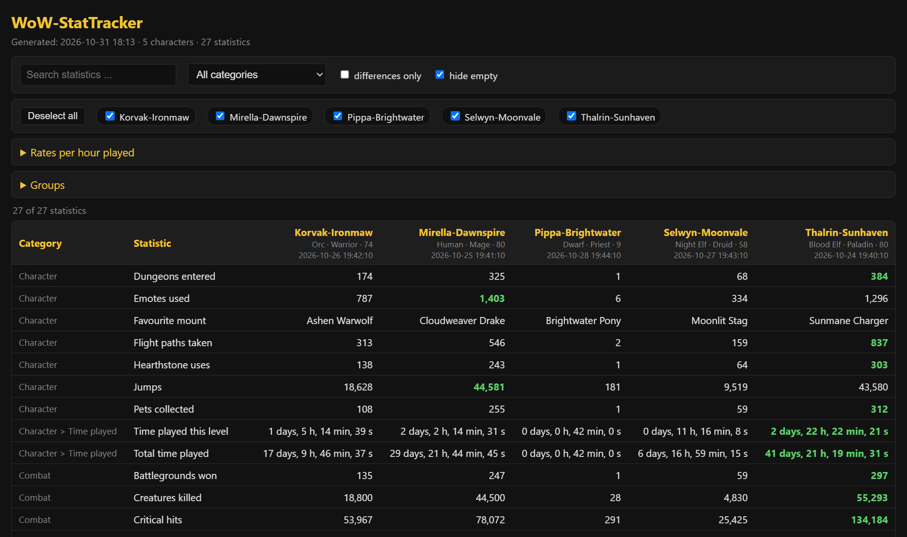
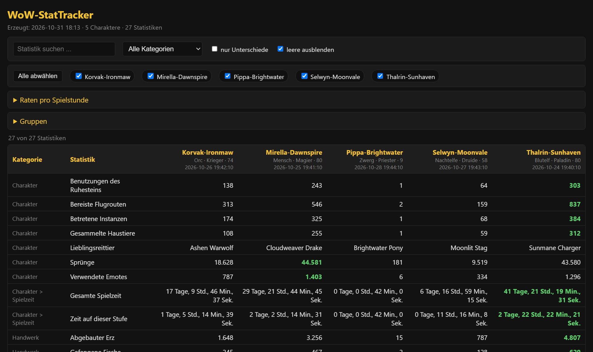
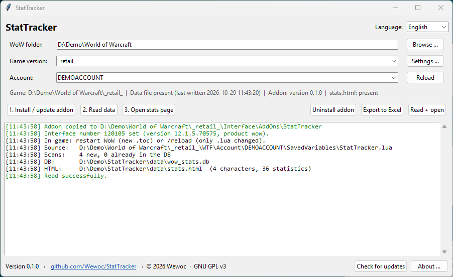
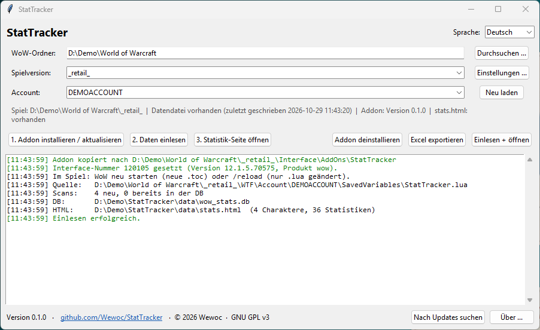
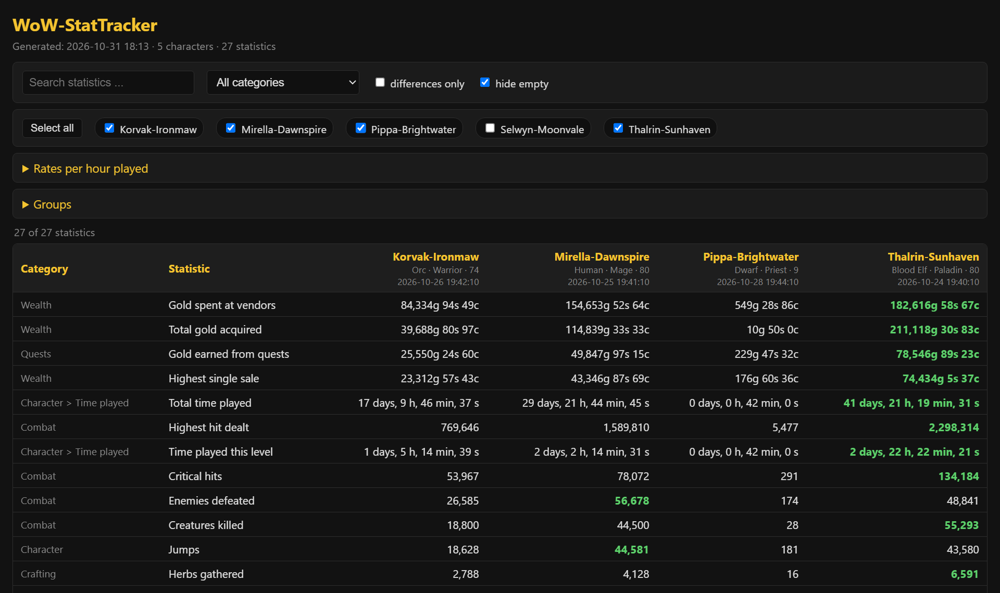
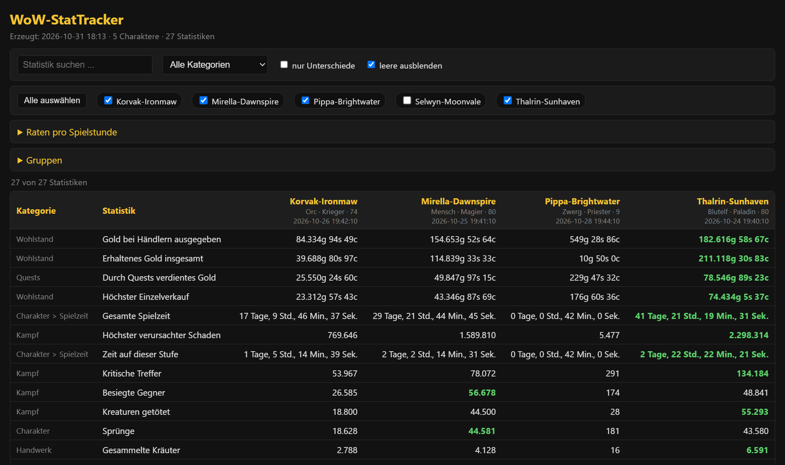
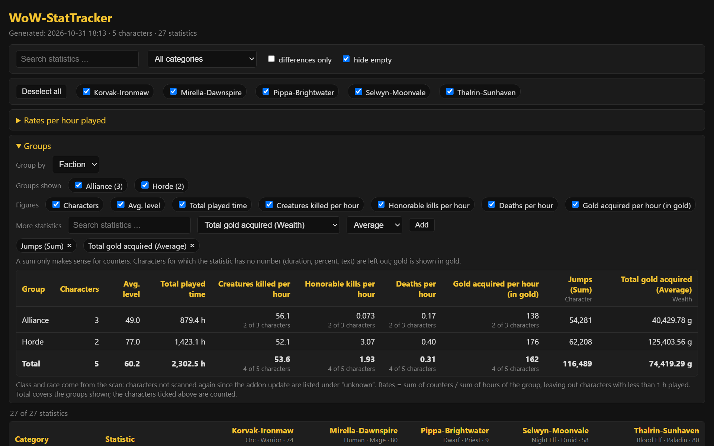
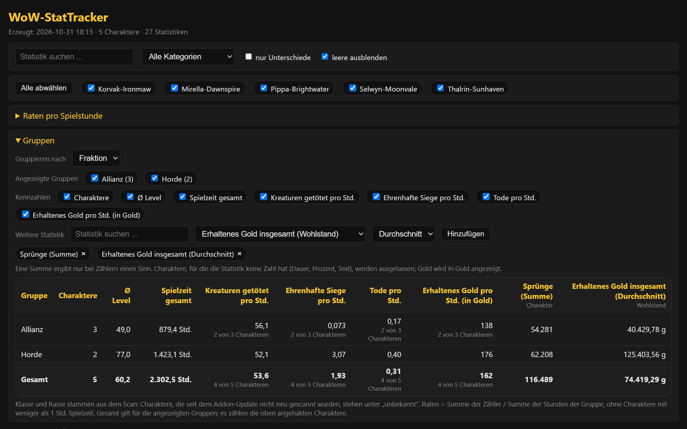
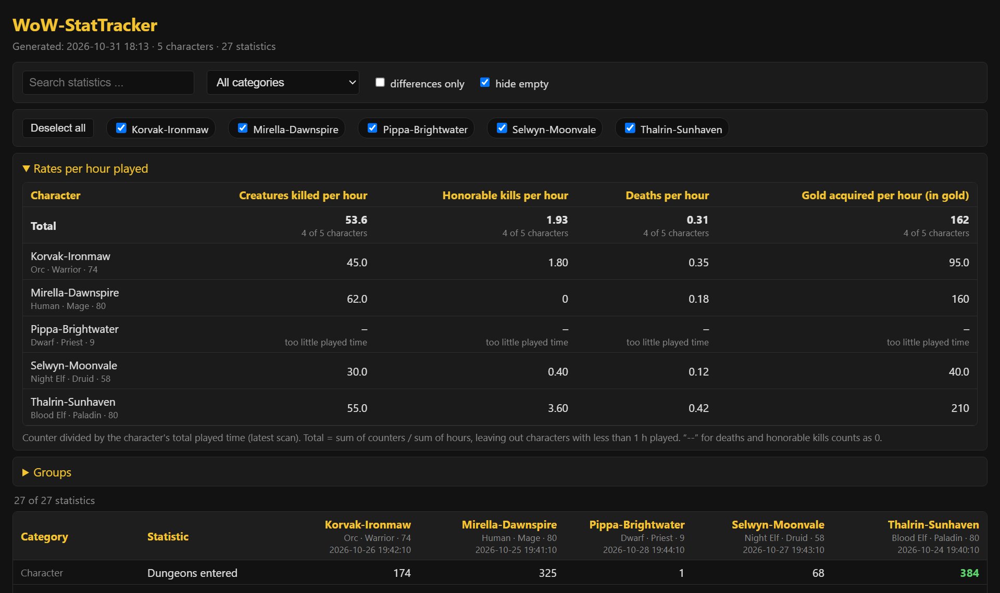
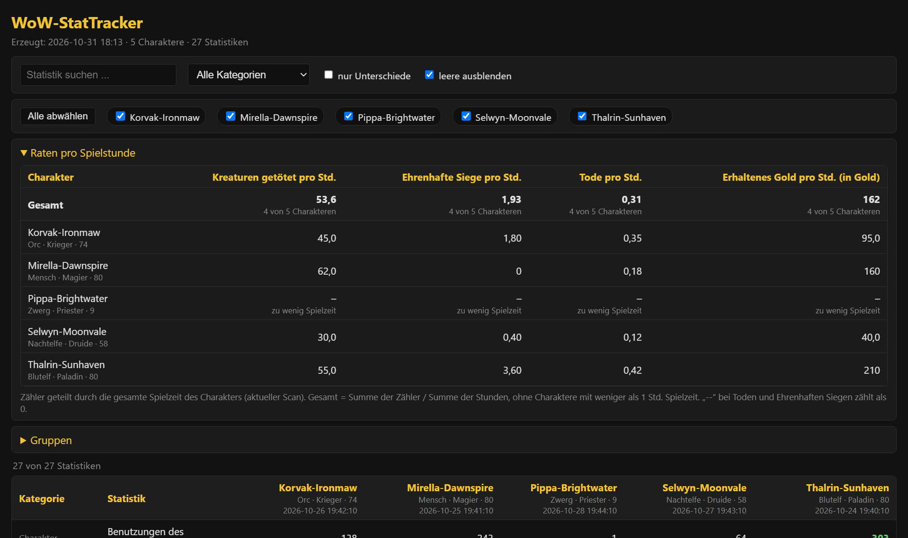

Compare your WoW characters,
side by side.Vergleiche deine WoW-Charaktere,
Seite an Seite.
StatTracker reads the game statistics of your World of Warcraft characters through a small addon, keeps every scan in a local database and shows them in a page in your browser or in Excel. Everything stays on your computer. StatTracker liest die Spielstatistiken deiner World-of-Warcraft-Charaktere über ein kleines Addon aus, speichert jeden Scan in einer lokalen Datenbank und zeigt sie auf einer Seite im Browser oder in Excel. Alles bleibt auf deinem Rechner.


All screenshots show invented demo data - made-up characters, realms and numbers.Alle Bilder zeigen erfundene Demodaten - ausgedachte Charaktere, Realms und Zahlen.
What it doesWas es kann
Compare charactersCharaktere vergleichen
Search, filter by category, show only differences, sort by any character. The best value in a row is highlighted. One button selects or deselects all characters. Race, class and level are shown under each name.Suchen, nach Kategorie filtern, nur Unterschiede zeigen, nach jedem Charakter sortieren. Der beste Wert einer Zeile ist hervorgehoben. Ein Knopf wählt alle Charaktere an oder ab. Rasse, Klasse und Level stehen unter jedem Namen.
GroupsGruppen
Group the characters by class, race, faction or realm and see the number of characters, the average level, the played time and the rates per hour of each group. Any other numeric statistic can be added as a column (sum, average or maximum). A character without a recorded class or race is listed as "unknown" - nothing is guessed.Gruppiere die Charaktere nach Klasse, Rasse, Fraktion oder Realm und sieh Anzahl, Durchschnittslevel, Spielzeit und Raten pro Stunde je Gruppe. Jede andere Statistik mit Zahl lässt sich als Spalte hinzufügen (Summe, Durchschnitt oder Maximum). Ein Charakter ohne erfasste Klasse oder Rasse steht unter „unbekannt“ - es wird nichts geraten.
Rates per hour playedRaten pro Spielstunde
Creatures killed, honorable kills, deaths and gold per hour of played time - for each character and as a total over all of them. If a number cannot be worked out, the page says why instead of guessing.Getötete Kreaturen, Ehrenhafte Siege, Tode und Gold pro Spielstunde - je Charakter und insgesamt über alle. Lässt sich eine Zahl nicht berechnen, nennt die Seite den Grund, statt zu raten.
Excel exportExcel-Export
One sheet per game version with a column per character, units for gold and played time, and the best values marked.Ein Blatt pro Spielversion mit einer Spalte je Charakter, Einheiten für Gold und Spielzeit und markierten Bestwerten.
History in a local databaseHistorie in lokaler Datenbank
Every scan is kept, so old numbers are not lost when you scan again. No account, no cloud.Jeder Scan bleibt erhalten, alte Zahlen gehen beim nächsten Scan nicht verloren. Kein Konto, keine Cloud.
Per game versionPro Spielversion
Only Retail, the tested version, is enabled by default. Other game versions can be enabled in the settings; each one gets its own database and page.Standardmäßig ist nur Retail aktiv, die getestete Version. Weitere Spielversionen lassen sich in den Einstellungen aktivieren; jede hat eigene Datenbank und Seite.
Addon at the click of a buttonAddon per Knopfdruck
Install, update and uninstall the addon from the app; the interface number is set automatically. A gentle scan is spread over about 10 seconds, so the game does not freeze.Addon in der App installieren, aktualisieren und deinstallieren; die Interface-Nummer wird automatisch gesetzt. Der Scan ist auf etwa 10 Sekunden gestreckt, das Spiel friert nicht ein.
German and EnglishDeutsch und Englisch
The window, the stats page and the Excel file follow the language you pick. Portable, with checksum-verified self-updates and automatic rollback.Fenster, Statistik-Seite und Excel-Datei folgen der gewählten Sprache. Portabel, mit prüfsummengesicherten Selbst-Updates und automatischem Rollback.
ScreenshotsBilder








Quick startSchnellstart
- Download
StatTracker.zipfrom the latest release and unpack it into your own folder, for exampleDocuments\StatTracker(notC:\Program Files). StartStatTracker.exe. No Python needed.LadeStatTracker.zipaus dem neuesten Release und entpacke sie in einen eigenen Ordner, zum BeispielDokumente\StatTracker(nichtC:\Program Files). StarteStatTracker.exe. Python ist nicht nötig. - Choose your WoW folder and the account, then 1. Install / update addon.Wähle deinen WoW-Ordner und den Account, dann 1. Addon installieren / aktualisieren.
- In game, once per character:
/statscan. Wait for "Stat sync done" (about 10 seconds), then/reloador log out.Im Spiel, einmal pro Charakter:/statscan. Auf „Stat-Sync fertig“ warten (etwa 10 Sekunden), dann/reloadoder ausloggen. - 2. Read data, then 3. Open stats page - or Export to Excel.2. Daten einlesen, dann 3. Statistik-Seite öffnen - oder Excel exportieren.
FAQ
Is my data sent anywhere?Werden meine Daten irgendwohin gesendet?
No. Statistics, database and pages stay in the data folder next to the program. The only network request is the optional check for a new release on GitHub, which sends no personal data. You can switch it off in the settings.Nein. Statistiken, Datenbank und Seiten bleiben im Ordner data neben dem Programm. Die einzige Netzwerkanfrage ist die optionale Suche nach einem neuen Release auf GitHub, sie sendet keine persönlichen Daten. In den Einstellungen lässt sie sich abschalten.
Which game versions work?Welche Spielversionen funktionieren?
Retail is tested and works. BC Anniversary is tested and does not work: that game version provides no statistics, so there is nothing to read. All other versions are untested.Retail ist getestet und funktioniert. BC Anniversary ist getestet und funktioniert nicht: Diese Spielversion stellt keine Statistiken bereit, es gibt also nichts auszulesen. Alle anderen Versionen sind ungetestet.
Windows warns about the file.Windows warnt vor der Datei.
The program is not code-signed, so SmartScreen may show a warning: choose More info, then Run anyway. The source code is open, and every update is verified against a published checksum.Das Programm ist nicht signiert, daher zeigt SmartScreen eventuell eine Warnung: Weitere Informationen, dann Trotzdem ausführen. Der Quellcode ist offen, und jedes Update wird gegen eine veröffentlichte Prüfsumme geprüft.
How do I uninstall it?Wie deinstalliere ich es?
Use Uninstall addon in the app (it asks before touching the data the addon saved inside WoW), then delete the program folder.Nutze Addon deinstallieren in der App (sie fragt, bevor sie die vom Addon in WoW gespeicherten Daten anfasst) und lösche danach den Programmordner.